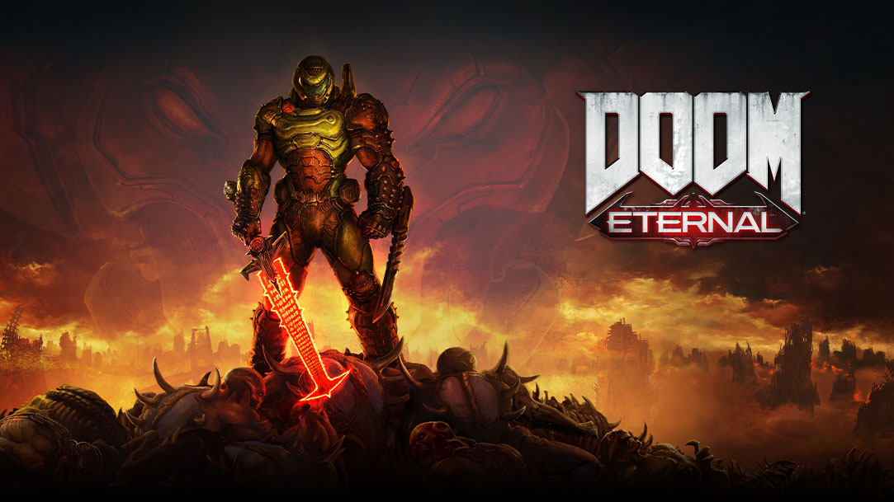

Doom Eternal
Doom Eternal – Gra z gatunku FPS, pierwszoosobowa strzelanka wyprodukowana przez id Software oraz wydana przez Bethesdę Softworks 20 marca 2020. W wielkim skrócie:
Po nieudanej inwazji na Marsie demony zaatakowały Ziemię, mordując 60% jej populacji. Niedobitki rasy ludzkiej uciekły z planety lub dołączyły do „Armored Response Coalition”, ugrupowania mającego na celu powstrzymanie inwazji.
Protagonista gry, Doom Slayer, wcześniej zdradzony przez dr Samuela Haydena, powraca, by stłumić inwazję. Musi w tym celu zabić piekielnych kapłanów, służących władczyni obcej rasy przypominającej anioły, chcącej poświęcić ludzkość dla dobra swojego świata.